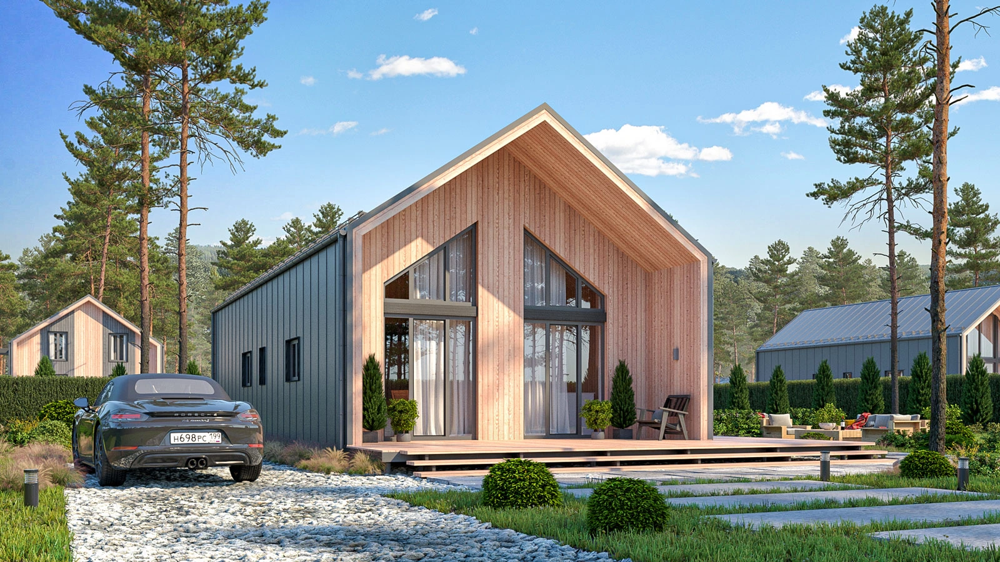
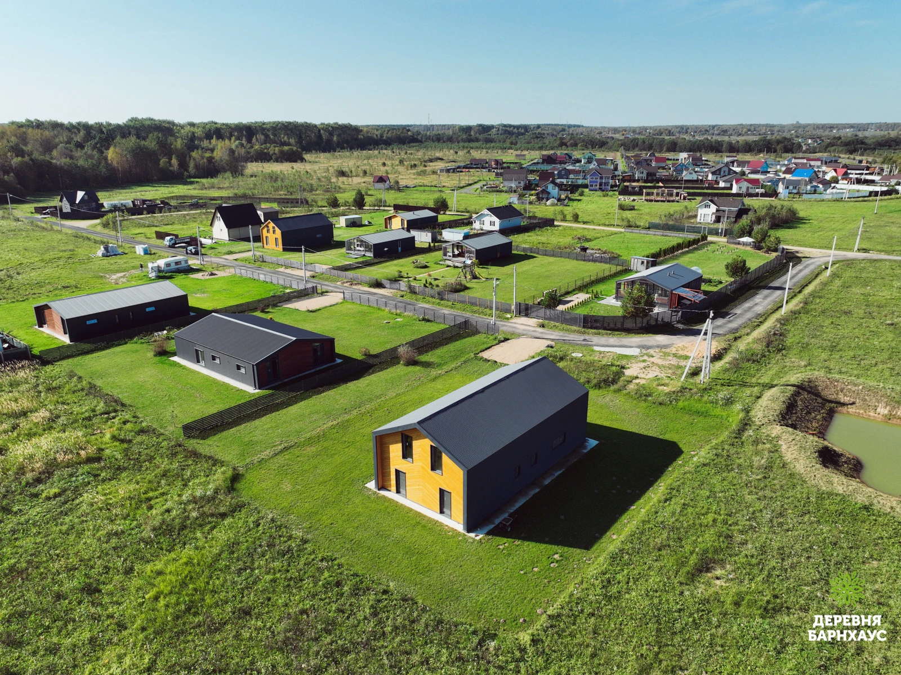

ЗАГОРОДНЫЕ ДОМА И УЧАСТКИ
Свой дом.
Своё пространство.
Дома в стиле барнхаус и участки в Подмосковье. Посмотрите архитектуру, выберите посёлок и приезжайте на просмотр.
Рассмотреть вариантыАрхитектура барнхауса · визуализацияДОМА И УЧАСТКИВыберите свой вариантПосмотреть варианты
ПОСЁЛКИ И АРХИТЕКТУРА
Сначала место.
Затем свой дом.
Оцените окружение посёлка и архитектуру домов. Наличие, готовность и условия покупки обсудим при обращении.

Посёлок
Деревня БарнХаус · Подмосковье · дома и участки
Место
для вашей жизни.
Сравните расположение участков и окружение. Обсудим подходящий посёлок и удобное время просмотра.
Обсудить просмотр